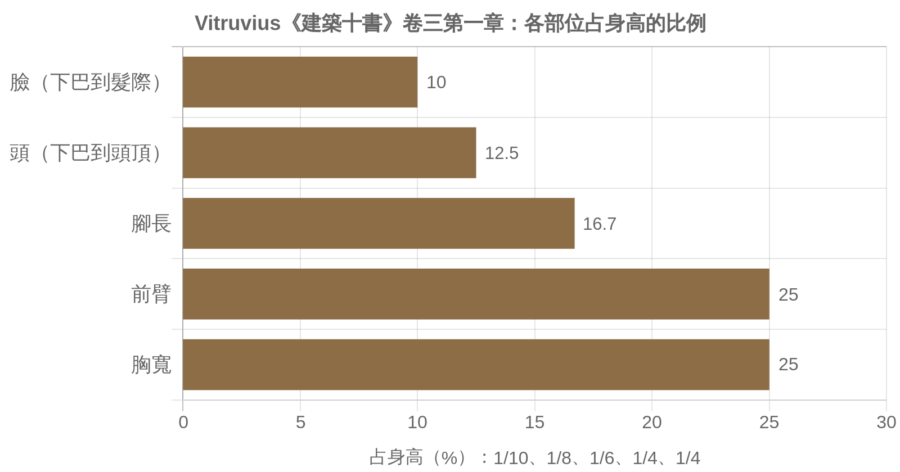
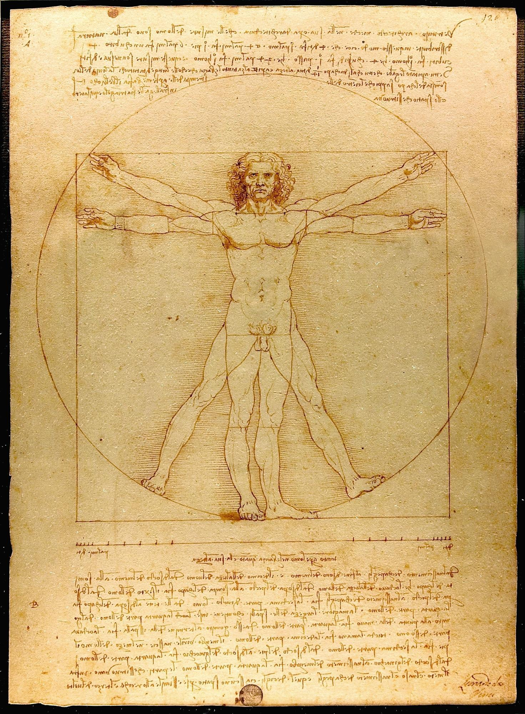
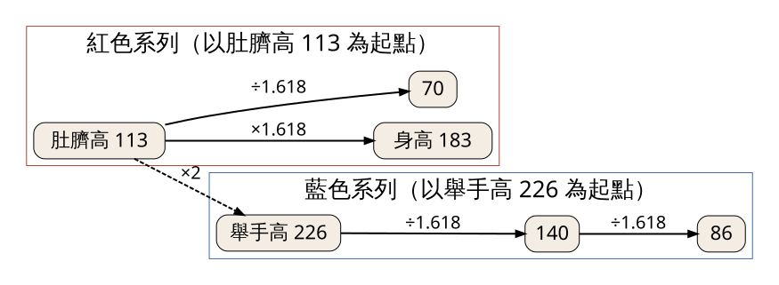
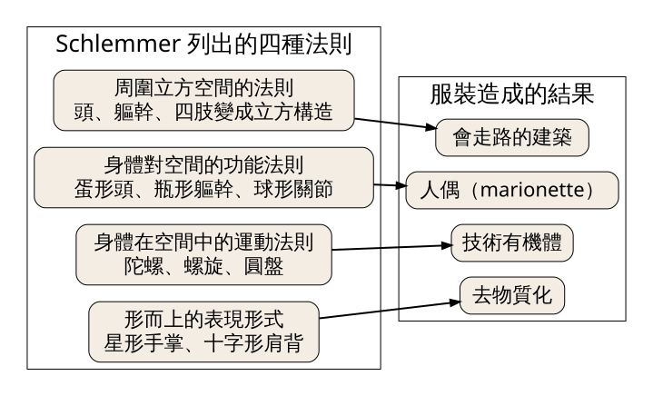

兩千年前的 Vitruvius 用身體的分數比例來規定神廟，1940 年代的 Le Corbusier 用一個 183 公分的男人來規定公寓。今天要看懂這兩套「以人為尺」的做法各自量了誰、又漏掉了誰，然後用自己的手掌和手肘去量一次家裡的東西。
史料 1940 年代，Le Corbusier 和事務所的助手想做一把以人體為基準的「尺」，讓建築師、工程師、家具師傅能用同一套數字工作。他們一開始用的身高是 1.75 公尺，大約是當時法國男性的平均值。後來這個數字被改成 6 英尺，也就是約 1.83 公尺。
改的理由出自 Le Corbusier 自己在《Le Modulor》裡的說法：他注意到英國偵探小說裡那些相貌堂堂的男人，例如警察，身高總是 6 英尺。一套號稱「普遍適用」的人體尺度，最後的基準身高來自通俗小說裡的警察形象。（依二手文獻：英譯本 The Modulor，Birkhäuser 2004 年版第 56 頁的這段話，經 Wikipedia「Modulor」條目轉引；Michael J. Ostwald 2001 年在 Nexus Network Journal 的書評也指出，基準被換成英國男性，是因為法國男性的身高套不進他要的幾何關係。）
這個故事好笑，但它點出今天的問題：說「以人為尺度」的時候，那個「人」是誰挑出來的？
經典理論｜Vitruvius《建築十書》（De architectura，約西元前 30 至前 15 年）卷三第一章
Vitruvius 是羅馬共和晚期到奧古斯都時代的建築師。《建築十書》卷三談神廟，第一章一開頭就把神廟的「對稱」（symmetria）和人體綁在一起。他主張：一座建得好的神廟，各部分之間要有固定的比例關係，就像一個「比例良好的人」身上，各部位都是全身的某個分數（見圖 1）。
他列出的比例很具體：臉從下巴到髮際占身高的十分之一，下巴到頭頂占八分之一，腳長占六分之一，前臂和胸寬各占四分之一。臉本身再分成三等分：下巴到鼻孔、鼻孔到眉毛、眉毛到髮際。

圖 1｜Vitruvius 文中各部位占身高的比例（依原文分數換算為百分比；這是他的主張，非實測數據）。來源：本課程依 Vitruvius《建築十書》卷三第一章第 2 節（Gwilt 英譯，LacusCurtius 線上版）繪製。授權：本課程自製圖解，原文頁面
接著是後來最有名的一段。他說肚臍是人體的自然中心：讓一個人仰躺、手腳張開，以肚臍為圓心畫圓，手指和腳趾會碰到圓周。人從腳底到頭頂的高度，又等於兩手平伸的寬度，所以人體也能放進一個正方形。
Vitruvius 從這裡推到建築：既然自然讓身體各部位成為全身的度量，古人就要求作品的每一部分都是整體的整數分之一。他還指出，建築用的度量單位本來就來自身體：指、掌、足、肘。他順著這條線談「完美的數」，說十是完美數，因為人有十根手指；數學家則推崇六。LacusCurtius 網站的編者 Thayer 在註釋裡批評過這段數字論證的推理。
史料｜Leonardo da Vinci〈維特魯威人〉（約 1490 年前後）
Vitruvius 只有文字，沒有留下圖。一千五百年後，Leonardo 在一張紙上把「圓中之人」和「方中之人」畫在同一個身體上（見圖 2）。仔細看，圓心在肚臍，正方形的中心卻落在更低的位置，兩個圖形並不共用一個中心。Leonardo 用這個錯位，讓同一個人同時放得進兩個形狀。

圖 2｜〈維特魯威人〉，圓的中心在肚臍，正方形的中心較低。來源：Leonardo da Vinci，Vitruvian Man，約 1492 年（Commons 標示年份），威尼斯學院美術館藏；照片：Luc Viatour。授權：Public domain，來源頁面
經典理論｜Le Corbusier《Le Modulor》（常記為 1948 年；法文初版 1950 年，Boulogne：Éditions de l'Architecture d'Aujourd'hui；英譯本 1954 年）
Le Corbusier 想解決一個很實際的麻煩：公制和英制互不相通，建築和工業產品各用各的尺寸。他的方案是從一個舉起手臂的男人身上取出幾個高度，再用黃金比例（約 1.618）往上往下切出兩串數字。依 Ostwald 的整理，紅色系列以 113 公分（肚臍高）為基準，藍色系列以它的兩倍 226 公分（舉手高）為基準（見圖 3）。

圖 3｜Modulor 的兩串數字如何生成（單位：公分，四捨五入）。來源：本課程依 Ostwald 2001 書評所列基準值（113、226、182.8 公分）與黃金比例換算繪製。授權：本課程自製圖解，來源頁面
這套系統的開發並不順。Ostwald 的書評寫到，助手最早的幾何作圖有錯，1948 年 11 月由數學家 Taton 指出問題，同年 12 月 Elisa Maillard 提出另一種作法，Le Corbusier 再加以簡化。Le Corbusier 自己也承認，用這套尺寸照樣可能做出難看的東西，最後還是要靠眼睛判斷。
兩個人的共同點很清楚：都相信人體裡藏著一組好的比例，建築照著它走就會和人相稱。差別在於 Vitruvius 用的是簡單分數，Le Corbusier 用的是黃金比例，再加上一個被指定的身高。
史料｜Le Corbusier，馬賽公寓（Unité d'habitation，1945 至 1952 年，馬賽 Michelet 大道 280 號）
法國建築與遺產城（Cité de l'architecture et du patrimoine）的導覽資料寫得很直接：這棟樓「完全以 Modulor 為基礎」，從建築的總體量一路算到室內設備的尺寸。樓長 135 公尺、深 24 公尺、高 56 公尺，共 337 個單位（321 戶公寓，加上旅館房間），可住約一千六百人。依 Wikipedia 條目轉引的《The Modulor》，Le Corbusier 說這套尺度管到平面、剖面、立面、遮陽板、屋頂與公寓配置。
用 Modulor 的眼光走一趟，可以看見幾件事。
單元是一套積木。依同一份導覽資料，所有公寓都由三種基本單元組合：入口、廚房與起居一組，父母臥室與浴室一組，兒童房與衛浴一組。十四種公寓類型，從單身套房到有八個孩子的家庭都有，全是這三塊的排列組合。尺寸一致，組合才拼得起來。
挑高客廳是身體尺度的放大。最常見的 E2 型是跨兩層的複式，客廳做成雙層挑高，接著一個陽台。導覽資料特別提到，這種挑高在當時是給收入較低家庭的住宅裡少見的空間奢侈。房間其他地方依人的高度壓低，客廳一處放大，人走進來會感覺到高低的對比。
細部回到手和身體。通往陽台的橡木門檻做得很寬，可以坐，掀起來裡面藏著暖氣。這是 Le Corbusier 與 Charlotte Perriand 合作的細節，坐的高度、手掀的動作都是身體尺度的問題。
回頭看故事引入：這棟樓所有尺寸的起點，是那位身高 183 公分的「標準男人」。比他矮很多的住戶，或坐輪椅的住戶，拿到的是一套為別人量好的房子。
馬賽公寓的照片仍受著作權保護，本課不放。想看建築與牆上那個舉手男人的混凝土浮雕，可到Fondation Le Corbusier 網站，或法國建築與遺產城的導覽資料 PDF。
經典理論｜Oskar Schlemmer〈人與藝術形象〉（Mensch und Kunstfigur），收於《Die Bühne im Bauhaus》，1925 年；英譯收於 The Theater of the Bauhaus，Arthur S. Wensinger 譯，1961 年
Schlemmer（1888–1943）1923 到 1929 年主持包浩斯的舞台工作坊，他的《三元芭蕾》（Triadisches Ballett）1922 年在斯圖加特首演。他在這篇文章裡把 Vitruvius 的問題倒過來問：人和舞台空間各有一套秩序，誰該聽誰的？
他的回答分兩邊。一邊是讓空間遷就自然的人，那就是寫實的幻覺劇場。另一邊是讓人去配合抽象的立方空間，那就是抽象舞台。夾在中間的是「舞者」，他同時服從身體的法則和空間的法則。
接著他用服裝來改造身體，列出四種法則和四種結果（見圖 4）。照立方空間的法則，頭、軀幹、四肢都變成立方構造，人成了「會走路的建築」。照身體的功能法則，頭成蛋形、軀幹成瓶形、關節成球形，人成了人偶。照運動法則，人變成陀螺、螺旋、圓盤組成的「技術有機體」。最後一種用星形的手掌、十字形的肩背去表現抽象意義，結果是「去物質化」。

圖 4｜Schlemmer 用服裝改造身體的四種方向。來源：本課程依 Schlemmer〈Man and Art Figure〉（The Theater of the Bauhaus，Wensinger 英譯，1961）繪製。授權：本課程自製圖解，來源頁面
放回今天的主題：Vitruvius 和 Le Corbusier 讓建築去配合人，Schlemmer 的「會走路的建築」反過來，讓人去配合空間的幾何。他也在同一段寫到，不管服裝怎麼改，人還是逃不過重力。
誤解一：〈維特魯威人〉證明人體符合黃金比例。Vitruvius 原文列的是十分之一、八分之一、六分之一、四分之一這些簡單分數，沒有黃金比例。把黃金比例加在這張圖上，是後人的說法（第 016 堂談過黃金比例常被事後套用）。真正用上黃金比例的是 Le Corbusier 的 Modulor，而且那是他的設計選擇，不是對人體的測量結果。
誤解二：Modulor 代表「一般人」的身體。它的基準是一個指定的 183 公分男性，Ostwald 的書評指出女性身體在過程中「晚才被考慮，又被排除」，並批評這套系統對實際人體比例的認識不足。對照工業設計師 Henry Dreyfuss：他在 1955 年的《Designing for People》首次發表男女兩個人體圖「Joe」與「Josephine」，1960 年的《The Measure of Man》再整理成以軍方紀錄等資料彙編的人因數據手冊（依美國工業設計協會 IDSA 對 Dreyfuss 的介紹）。用量測資料決定尺寸，和用一個理想身體推出比例，是兩條不同的路。
誤解三：照著人體比例做，作品自然就好看。Vitruvius 的主張是「經典理論」，屬於他的信念。Le Corbusier 本人也說，用 Modulor 一樣可能做出難看的東西，眼睛才是裁判（依 Ostwald 書評轉述）。比例系統提供的是一致性，好不好看還要另外判斷。
看（5 分鐘） 在家裡找三個「跟身體直接打交道」的東西：門把、餐桌、樓梯一階、洗手台、床沿都可以。站在它前面，留意你的手、膝蓋、腰各自落在它的哪個位置。哪一個讓你覺得剛好，哪一個讓你得彎腰或踮腳？
做（10 分鐘） 用 Vitruvius 時代的單位量家：「掌」用手掌四指併攏的寬度，「肘」用手肘到中指尖的長度，「步」用一般走路的一步。拿紙筆記下：
可以的話，請家人或室友用他們的手再量一次同一張桌子，把兩組數字並排寫下。
回顧（5 分鐘）
來源 | 類型 | 查核日期 |
Vitruvius, De architectura 卷三第一章（Gwilt 英譯，LacusCurtius 線上版，含 Thayer 註） | 經典理論 | 2026-11-13 |
Michael J. Ostwald, Review of The Modulor and Modulor 2, Nexus Network Journal 3(1), 2001 | 經典理論（書評，學術期刊） | 2026-11-13 |
Wikipedia「Modulor」條目（用於轉引 The Modulor 英譯本 2004 年版第 56 頁與出版年份） | 依二手文獻 | 2026-11-13 |
《Le Modulor》法文初版書目資料（Boulogne：Éditions de l'Architecture d'Aujourd'hui，1950） | 史料（書目） | 2026-11-13 |
Cité de l'architecture et du patrimoine，〈L'Unité d'habitation, Marseille 1945–1952〉導覽資料 | 史料 | 2026-11-13 |
Walter Gropius 與 Arthur S. Wensinger 編，The Theater of the Bauhaus（Wesleyan University Press，1961），收 Schlemmer〈Man and Art Figure〉 | 經典理論 | 2026-11-13 |
史料 | 2026-11-13 | |
IDSA，Henry Dreyfuss 介紹（Designing for People 1955、The Measure of Man 1960） | 史料 | 2026-11-13 |
圖 2 授權頁：Leonardo da Vinci, Vitruvian Man（Wikimedia Commons，Public domain） | 圖片授權 | 2026-11-13 |
延伸閱讀：Le Corbusier，The Modulor 與 Modulor 2（Birkhäuser 合訂本）；Henry Dreyfuss，Designing for People（1955）。